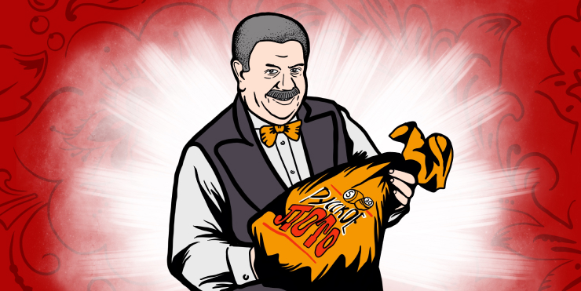
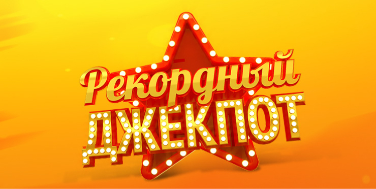
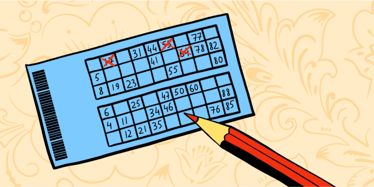
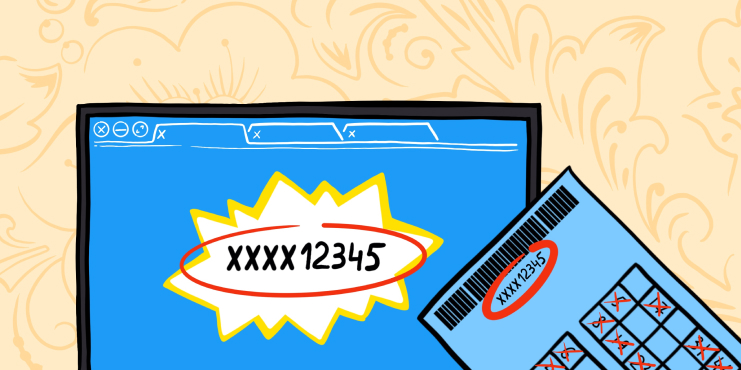

Как устроено «Русское лото»
Когда недорогой билет обещает миллионный выигрыш, мы ждём подвоха. Но лотерея не чёрный ящик. В подробностях рассказываем, кто следит за соблюдением правил, сколько денег можно выиграть и как их забрать.
«Русское лото» — это всероссийская государственная лотерея, напоминающая народную игру в лото. С момента её появления в XVI веке в Италии правила существенно не изменились: в современном лото тоже не нужно придерживаться стратегий и просчитывать ходы. Прелесть игры в полном доверии случаю, низкой стоимости билета и возможности получить гораздо больше, чем поставлено на кон.
В этом году лотерее исполнится 25 лет. Первый выпуск «Русского лото» состоялся 16 октября 1994 года. Всё это время её бессменно ведёт Михаил Борисов — тот самый жизнерадостный мужчина с седыми усами в жилетке, которого вы видели по телевизору.
Михаил Борисов никогда не был просто харизматичным ведущим. С первого выпуска он выступал настоящим идеологом лотереи и отвечал за концепцию программы. Именно он придумал сделать из игры культурно-развлекательную семейную передачу. В рограмму приглашали выступать известных и начинающих звёзд, разыгрывали сценки, рассказывали об исторических событиях, связанных с номером тиража. А ещё Михаил Борисов не пропустил ни одного выпуска за 25 лет.
Сейчас в «Русском лото» разыгрывают автомобили, загородные дома, путешествия и крупные денежные призы, но раньше победителям вручалась и бытовая техника: холодильники, телевизоры, утюги и пылесосы.
За последние 8 лет в программе разыграли больше 24 миллиардов рублей, состоялось несколько помолвок, выходили в эфир и участвовали в тиражах космонавты, а Михаил Борисов перетаскал такое количество мешков с бочонками, что, по его словам, мог бы вручную перегородить Енисей или построить ГЭС.
Лотерея стала сразу всероссийской, она воспринималась как абсолютное чудо. В 90-е годы наша программа была одной из немногих, где действительно исполнялись мечты.
Что можно выиграть

В первых турах можно выиграть от нескольких тысяч до нескольких миллионов рублей, а также автомобили, загородные дома и путешествия. Все выигрыши можно получить в денежном эквиваленте.
Самый крупный приз — джекпот. Это десятки и даже сотни миллионов рублей, он накапливается от тиража к тиражу. Джекпот можно выиграть, если 15 чисел верхнего или нижнего поля билета совпадут с номерами на первых 15 бочонках, вытянутых ведущим из мешка. Рекордный джекпот — около 900 000 000 рублей.
Призовой фонд формируется из половины стоимости всех проданных билетов. В период с октября 2017 до октября 2018 года сумма выигрышей составила 8,3 миллиарда рублей. Победителями стали 45 миллионов участников лотереи, из них миллионерами — 422 человека.
Самые крупные выигрыши в «Русском лото»
-
1
Наталья Власова — 506 000 000 рублей.
1 204-й тираж, трансляция от 5 ноября 2017 года. Деньги пенсионерка решила потратить на покупку жилья, отдых, образование дочери и благотворительность.
-
2
Любовь и Сергей Догоровы — 500 000 000 рублей.
1 264-й тираж, трансляция от 1 января 2019 года. Победители вложились в путешествия, покупку квартиры, помощь родственникам и благотворительность. Часть суммы собираются инвестировать.
-
3
Николай и Оксана Мирошниченко — 500 000 000 рублей.
1 264-й тираж, трансляция от 1 января 2019 года. Полмиллиарда планируют потратить на путешествия, выплату ипотеки, помощь родственникам и благотворительность.
В России все лотереи государственные и регулируются Федеральным законом № 138-ФЗ. Организаторами розыгрышей выступают Министерство спорта РФ и Министерство финансов РФ. Они утверждают условия лотерей и заключают контракты с операторами. Часть денег, вырученных от продажи билетов, идёт на финансирование государственных программ по развитию физической культуры и спорта.
Где купить билет

-
На сайте
Здесь можно найти билеты с любимыми числами и купить разом до 100 штук. А ещё доступна опция заказа пяти билетов, в которых будут все числа от 1 до 90.
-
В мобильном приложении
Удобно покупать билеты с iOS и Android, следить за результатами розыгрышей и смотреть трансляции.
-
В розничных точках продаж
На карте можно найти киоски, лотерейные аппараты и партнёрские магазины: «Почта России», «Связной», «Билайн», «МегаФон», «Ростелеком», Tele2, «Перекрёсток», «Пятёрочка», «Бристоль».
-
Через SMS
Нужно найти на специальной странице идентификационный код лотереи и прислать его SMS-сообщением на номер 9999. Деньги спишутся с баланса мобильного телефона.
Продажи билетов на воскресный тираж закрываются в субботу в 17:20 по московскому времени.
Как играть
«Русское лото» снимается в студии со зрителями и специальной комиссией, которая проверяет количество бочонков в мешке перед розыгрышем и следит, чтобы он был проведён по всем правилам. Комплект бочонков хранится в сейфе. К ним могут прикасаться только ведущие, приглашённый гость и служба безопасности.
Подтасовка результатов исключена: все бочонки одинаковые, с гладкой поверхностью. Если какой-то из них оказывается повреждённым, весь комплект заменяют на аналогичный. Он тоже хранится в сейфе. После окончания съёмок сейф с бочонками и студию опечатывают.
В каждом билете «Русского лото» два поля 9 × 3. В каждой строчке — четыре пустые клетки и пять чисел в диапазоне от 1 до 90. Ведущий «Русского лото» достаёт бочонки из мешка по одному и называет их номера. Задача участника — следить за ходом розыгрыша и вычёркивать в билете числа, изображённые на бочонках. Лотерея проводится в несколько туров.
Туры лотереи

-
1
Первый тур
Выигрывают билеты, в которых пять чисел в любой из строк раньше других совпадут с номерами бочонков, вынутых ведущим из мешка. Раньше других — значит раньше, чем в других билетах, участвующих в тираже.
-
2
Второй тур
Здесь выигрывают те билеты, в которых оказались зачёркнуты все 15 чисел в верхнем или нижнем поле. Если это случилось на пятнадцатом ходу, поздравляем — вы выиграли джекпот.
-
3
Третий и последующие туры
На этих этапах выигрывают билеты, в которых раньше других совпадут все 30 чисел. В дальнейшем розыгрыше они не участвуют.
-
4
«Кубышка»
Дополнительный тур, который проводят не всегда. В нём выигрывают билеты, где все невыпавшие в тираже числа оказываются в одном поле — верхнем или нижнем.
Где посмотреть результаты лотереи
Иногда участники лотереи покупают билеты и забывают про них. По иронии именно эти билеты часто оказываются счастливыми, а представители лотереи неделями ищут победителей.
Такой прецедент случился с пенсионеркой Натальей Власовой из посёлка Панино Воронежской области, которая сорвала джекпот и выиграла 506 миллионов рублей. Победительница уже хотела выкинуть залежавшийся на серванте билет из прошлого тиража, но случайно обнаружила, что он выигрышный. Вот что можно сделать, чтобы не попасть в такую ситуацию:
-
1
Посмотреть трансляцию
Проверенный способ узнать результат раньше всех и хорошая семейная традиция. Трансляция розыгрышей проходит каждое воскресенье в программе «У нас выигрывают!» на НТВ.
-
2
Проверить числа в архиве тиражей
Найдите номер тиража, указанный на билете, и узнайте, какие бочонки выпадали во время трансляции. Либо введите номер билета на специальной странице и проверьте, счастливый ли он.
-
3
Получить SMS
Если при покупке билета вы указывали номер телефона, на него придёт сообщение о выигрыше.
-
4
Проверить результаты в мобильном приложении
Программа для iOS и Android предоставляет архив тиражей и присылает push-уведомления со свежими результатами. Также в приложении можно покупать билеты, изучать программу предстоящих розыгрышей и смотреть трансляции.
-
5
Спросить результаты в точках распространения билетов
На случай, если под рукой ни компьютера, ни телефона, а ждать совсем не хочется.
-
6
Узнать в газете
Результаты тиражей публикуются по средам в «Аргументах и фактах».
-
7
Узнать по телефону
Номер круглосуточной горячей линии: +7 (499) 270-27-27.
Как получить выигрыш
Чтобы получить выигрыш, нужно предъявить паспорт и лотерейный билет. Забрать приз можно в течение шести месяцев после оглашения результатов тиража.
Если в этот срок получить выигрыш по какой-то причине не удалось, нужно заполнить специальную форму, которая есть на сайте «Столото», и обратиться в лотерейный центр в Москве. Если представители лотереи сочтут эту причину уважительной, вы получите приз на указанный в заявлении счёт.
В этом случае выигрыш будет ждать победителя ещё три года. Все выигрыши, за которыми никто не пришёл, перечисляются в государственный бюджет.
Где забрать деньги
В зависимости от суммы есть несколько способов забрать приз:
-
Перевести на баланс кошелька «Столото» — до 100 000 рублей
Этот вариант подойдёт, если вы указали номер телефона при покупке. Зарегистрируйтесь на сайте с этим номером и выберите «Перевести выигрыш в кошелёк» на странице информации о билете. Эти деньги можно использовать для покупки новых билетов.
-
Забрать в точке продаж — до 2 000 рублей
Чтобы найти подходящую точку, нужно выбрать на странице с картой «Столото» пункт «Получить выигрыш» и ввести сумму выигрыша.
-
Перевести на лицевой счёт — от 100 000 рублей
Для получения выигрыша нужно предоставить комплект документов и реквизиты счёта. Подробности — на сайте «Столото».
-
В лотерейном центре «Столото» в Москве можно получить любую сумму.
Какие налоги придётся заплатить
Налог с выигрыша для россиян составляет 13%. Для нерезидентов РФ — 30%. Если за год вы выиграли не больше 4 000 рублей, ничего платить не нужно.
Выплату от 15 000 рублей вы получите уже с удержанным налогом 13%. Если выигрыш меньше 15 000 рублей, нужно подать в налоговый орган по месту жительства декларацию, оформленную по форме 3-НДФЛ, а потом заплатить налог в банке или онлайн. То же самое придётся сделать для получения вещевого приза: например, автомобиля или квартиры.